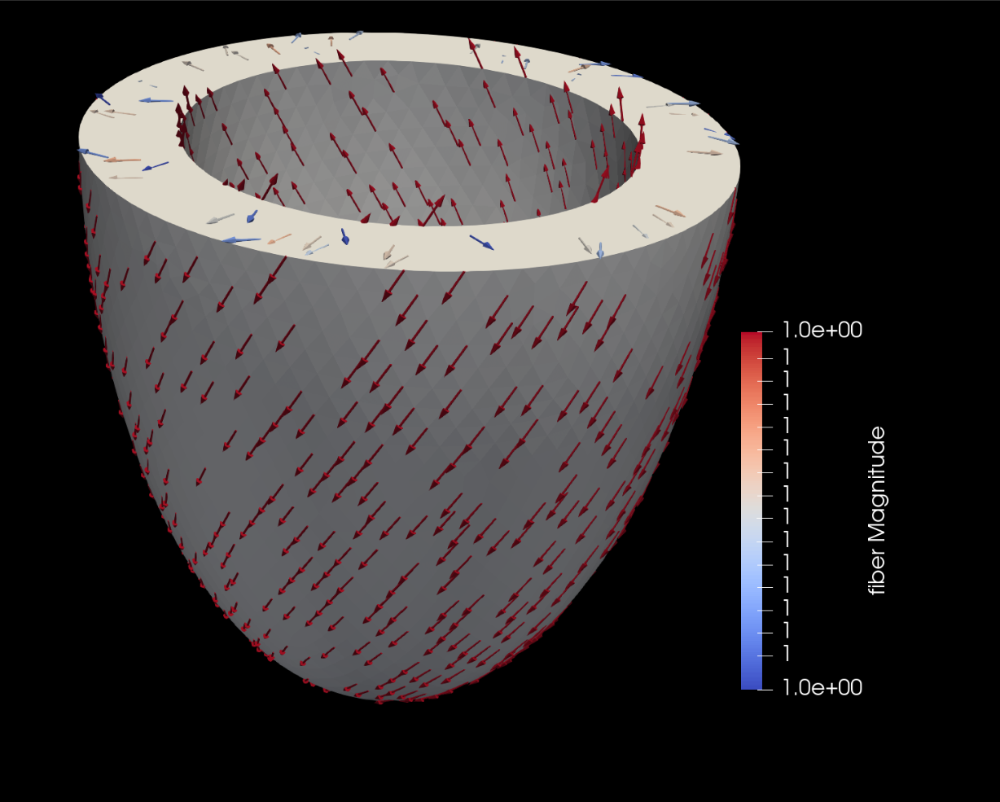
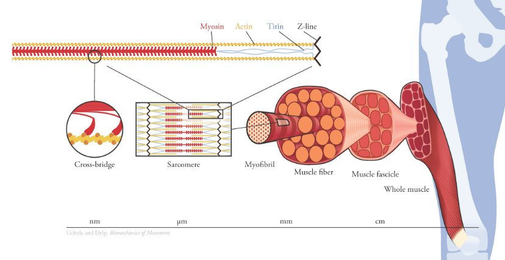
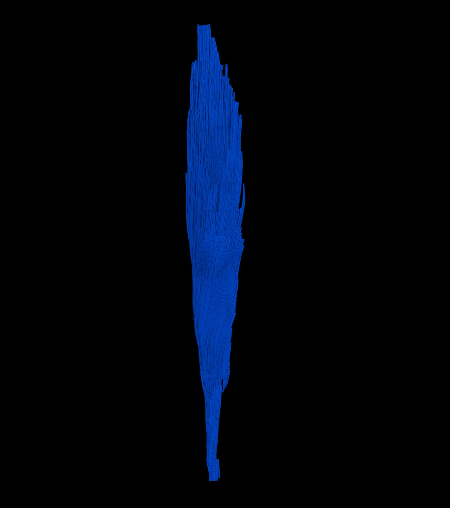
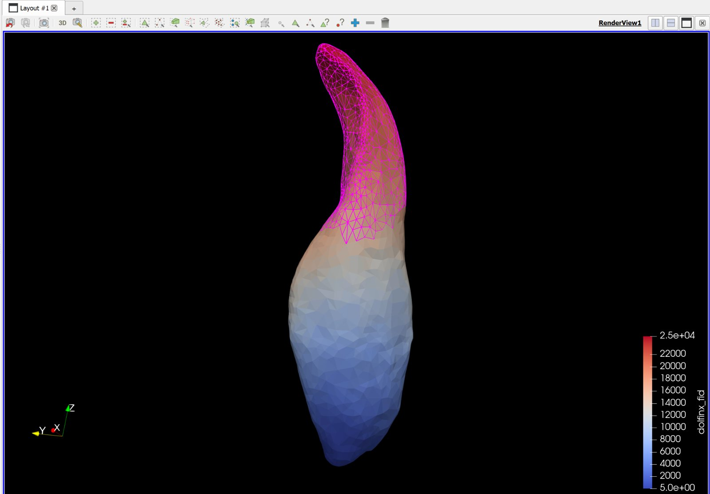
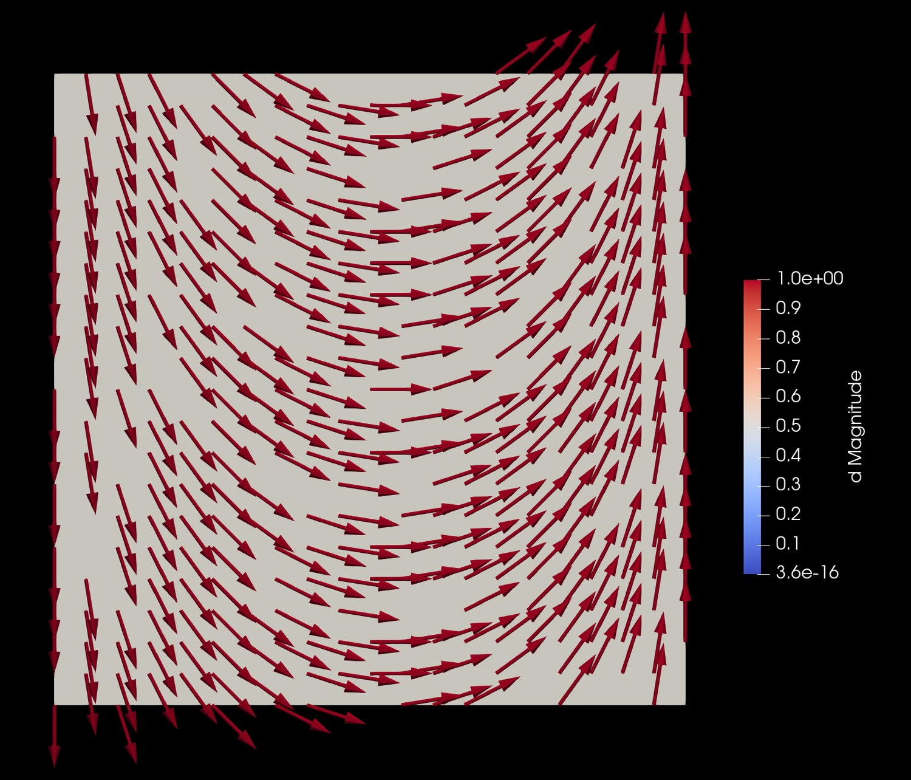
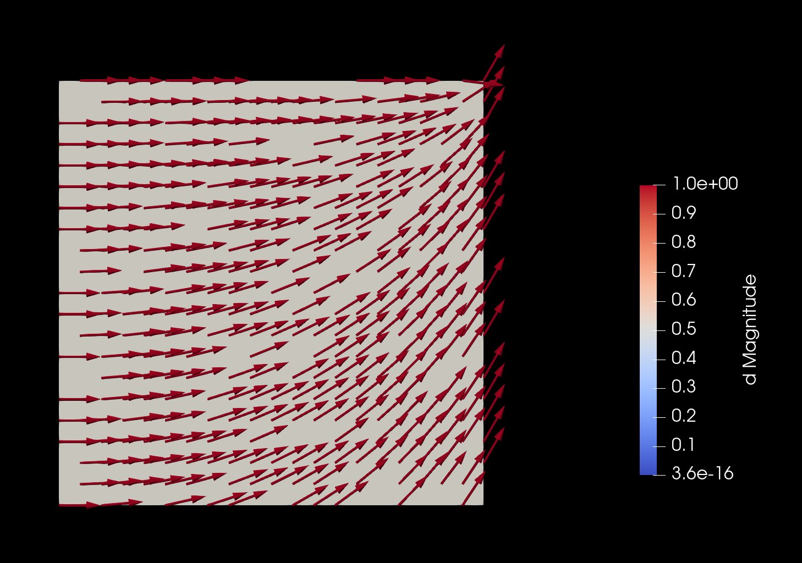
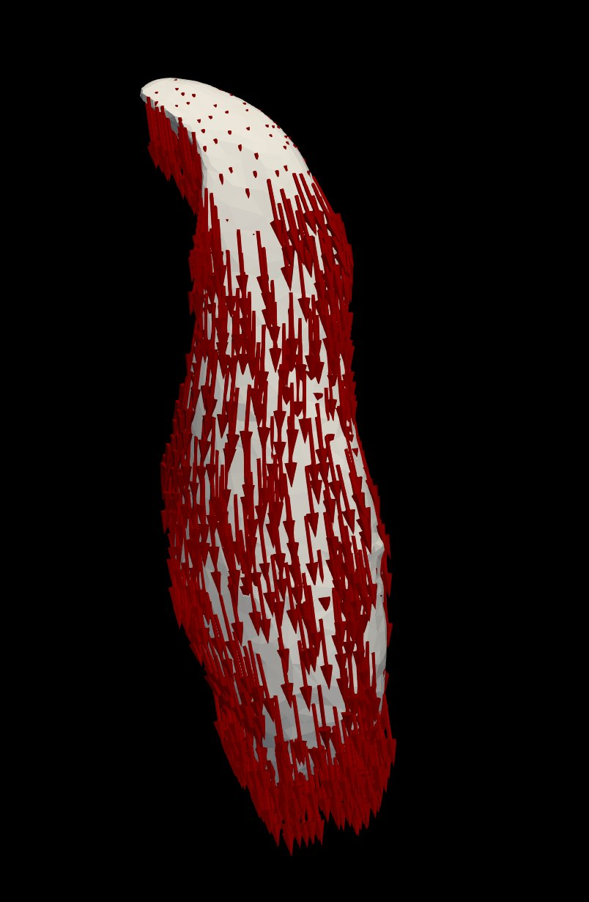
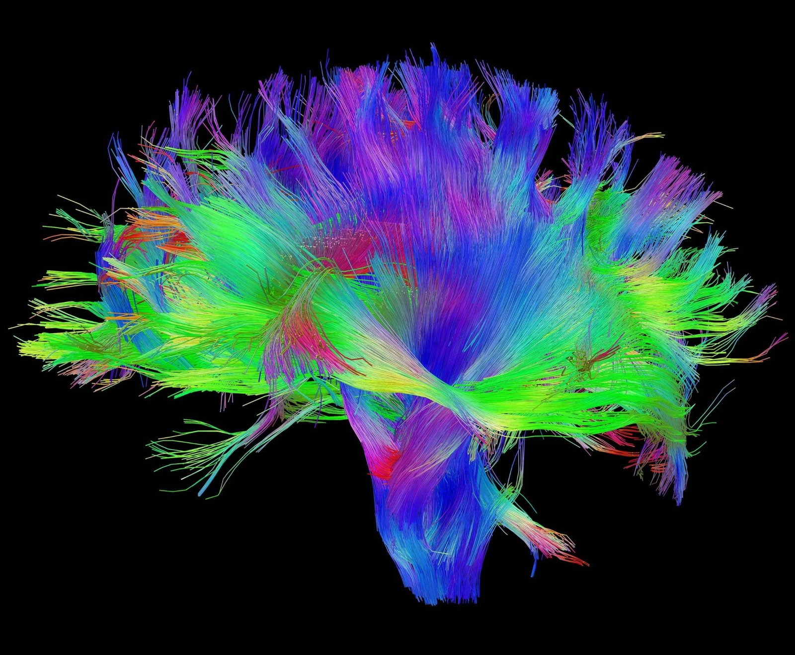

Two physically grounded ways to predict the fiber architecture of soft tissue, skeletal muscle and the heart, from geometry alone: a fluid-flow analogy, and a liquid-crystal director field. The director-field formulation has been the main focus of my recent work.
The mechanics of muscle and heart tissue depend on which way the fibers run, but that internal architecture is hard to measure in a living person. I work on inferring it from geometry, using two physical pictures of what a fiber field is, and comparing them.
The first picture treats the fibers as the streamlines of a slow viscous flow through the tissue. The second, and the focus of the past several months, treats them as the director field of a liquid crystal: the tissue is modeled as an ordered medium whose preferred axis bends and twists to minimize an elastic energy. This work is a collaboration between Padmini Rangamani's lab at UC San Diego and Marie Rognes' group at the Simula Research Laboratory (with Ingvild Devold), and the flow side was presented as a Biophysical Society poster.
This page describes the project at a public, conceptual level; it is ongoing, unpublished research, so the derivations and code are not shown.
In a mechanical or electrical simulation of muscle or heart, the predicted behavior depends strongly on the fiber field. Geometry is increasingly easy to obtain from imaging; the internal fiber architecture is not.
Diffusion tensor imaging can estimate fiber fields in vivo, but it is costly, limited in resolution, and not widely available. A geometry-driven way to generate a physically reasonable fiber field, and to understand how much that field depends on the assumptions behind it, is therefore genuinely useful, both for skeletal muscle and for the heart, where fiber orientation governs how the ventricle contracts and how electrical activation spreads.

Push a slow, viscous flow through a muscle from one tendon attachment to the other, and its streamlines sweep out smooth end-to-end paths that stand in for the fibers. I built a reproducible pipeline around this idea and stress-tested it.


A robustness study across three anatomically distinct muscles (a bipennate gastrocnemius, a pennate soleus, and a broad gluteus maximus) compared two ways of driving the inlet and perturbed the tagged attachment regions. The predicted fibers were stable: the boundary-condition methods agree to a mean angular deviation of 2.51 degrees or less, perturbations stay within 1.65 degrees, and at least 88% of surface points fall within 5 degrees. This is the flow side that was presented at the Biophysical Society meeting.
The flow analogy works, but real fiber alignment is better described as an ordered medium settling into its lowest-energy configuration. This is the picture I have been developing most recently, and it is more physically principled than simply asking for the smoothest interpolation.
A nematic liquid crystal is a material whose molecules have no positional order but share a preferred axis, the director. Modeling tissue this way treats the fiber direction as a unit-length director field that bends, splays, and twists to minimize the Frank-Oseen elastic energy, subject to the directions known on the boundary. Reframing fiber generation as a constrained energy minimization, rather than a smoothest-path interpolation, is what distinguishes the three formulations below.
The smoothest possible coordinate lines connecting the boundaries. Simple, but the field has no physical constraint beyond smoothness.
Streamlines of an incompressible viscous flow. Adds a divergence-free constraint, which shapes the paths physically.
A unit-length director that minimizes liquid-crystal elastic energy. The tissue behaves like an ordered medium, and singularities and defects are handled naturally.


Because the director must stay on the unit sphere, the minimization is constrained. Rather than a saddle-point Newton solve, I use a projected gradient descent: take an energy-reducing step, then project the field back onto the unit sphere, and repeat until it converges, with the surface-tangency condition imposed as a penalty. The same machinery extends to studying topological defects in the field and where the model reaches its limits.
The director-field method has a natural home in the heart, where the fiber angles at the inner and outer walls are known from imaging, and the field in between must be filled in. The same solver then carries over to skeletal muscle.
For the left ventricle, the wall directions are prescribed across the transmural and apicobasal coordinates, and the Frank-Oseen problem is solved to recover a smooth fiber field throughout the muscle wall, the third coordinate following from the other two. This reconstructs the characteristic helical turning of cardiac fibers, which is what sets how the ventricle contracts and how electrical activation propagates through it.

On skeletal muscle the two pictures can be compared head to head. The Frank-Oseen director field and the Stokes-flow field agree to a mean of 5.2 degrees and a median of 3.8 degrees, close, but meaningfully different, which is exactly the kind of gap worth understanding: it marks where the smoothest divergence-free flow and the lowest-energy ordered medium genuinely disagree about how a fiber should run.
Taken together, the two approaches turn fiber generation from an ad hoc interpolation into a physics question with a clear answer to interrogate: a viscous flow on one hand, an energy-minimizing ordered medium on the other, with a measured gap between them. The director-field formulation in particular brings the language of liquid-crystal physics, elastic energy, the unit-norm constraint, singularities, and topological defects, to a biomechanics problem that has usually been handled with rule-based interpolation.
Ongoing directions include drawing accurate boundary directions from OpenSim, extending the comparison across more muscles, a sensitivity analysis of the Frank-Oseen field to match what was done for the flow, and tracing how these fiber differences propagate into mechanical contraction and electrical activation, with diffusion tensor imaging as the eventual reference standard.
